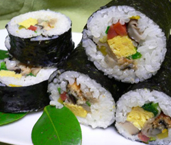

恵方巻き
- 調理時間：40 分
- （一人当たり）
- カロリー：449kcal
- たんぱく質：19.8g
- 脂質：10.8g
- 塩分：2.5g

＜４人分＞
★寿司飯
- ・ごはん
- ５００ｇ
- ・米酢
- 大さじ３
- ・砂糖
- 大さじ１
- ・塩
- 小さじ１/２
★厚焼き卵
- ・卵
- ３個
- ・砂糖
- 小さじ１
- ・塩、コショウ
- 少々
- ・油
- 少々
★その他の具と材料
- ・ほうれん草（ゆでたもの）
- ２株
- ・アナゴの蒲焼き（市販品）
- １本
- ・焼き海苔
- ２枚
★野菜の甘煮
- ・干ししいたけ
- ４枚
- ・かんぴょう（２０㎝長さ）
- ６本
- ・ニンジン
- １/２本
- ・ゴボウ
- ２０ｃｍ
Ａ
- ・だし汁
- 300～400ml
- ・みりん
- 大さじ２
- ・醤油
- 大さじ２
- ・塩
- 少々

-
＜野菜の甘煮をつくる＞
① かんぴょうは洗って、たっぷりの塩をふってよくもんだ後、塩を流して水につけておく。
干しシイタケはたっぷりの水につけて戻す。
② ニンジン、ゴボウは棒状に切り、ゴボウは水にさらす。
③ 鍋にＡを入れて煮立て、ニンジンを加えて弱火で５分位煮て、火が通れば取り出す。
同じ鍋に①のかんぴょう、ゴボウ、干ししいたけを加え、落としブタをして、汁けがなくなるまで煮る。
④ 干しシイタケは細切りにする。 -
＜厚焼き卵をつくる＞
① ボウルに卵を入れてよくほぐし、砂糖と塩を加えてよくまぜる。
※ こし器でこすときれいに仕上がる。
② 卵焼き器を強火に熱し、油をしく。卵液を流し入れて厚焼き卵をつくり、細長く切っておく。 -
＜他の具の下準備をする＞
① ほうれん草は熱湯でサッと湯がいて冷水にさらし、醤油洗いをする。
② 穴子は温め、巻きやすいように切っておく。
③ 焼き海苔はすこしあぶって香りを出す。 -
＜寿司飯をつくる＞
① 鍋に酢、砂糖、塩をいれて火にかけ、調味料をしっかり溶かした後、冷ます。
② 炊けたごはんに寿司酢をまぜ、粘りがでないように切るように混ぜる。 -
＜太巻きを仕上げる＞
① 巻きすの上に海苔をおき、寿司飯を広げます。このとき、奥を２ｃｍくらい空けておきましょう。
② 寿司飯の上にすこしくぼみをつけ、その上に具を並べていきます。
③ 巻きすと一緒に一気にかぶせるように巻き込み、形をととのえる。
④ 食べるときはお好みでかぶりつく、または切り分ける。
※ 切るときは切るたびに包丁についたご飯をぬれ布巾で拭くとよい。
恵方巻き
２月３日は節分です。節分はその名の通り季節の分かれ目を指しますが、本来、節分とは「立春」「立夏」「立秋」「立冬」の前日すべてにあたります。現代では、立春の前日だけが節分とされています。日本では明治維新以降、新暦を使用しているため新年は１月１日。しかし、旧暦では２月の立春が年のはじめ。つまり、立春は季節の分かれ目であるとともに年の分かれ目でもあることから、新しい年を祝う日という意味もこめられています。
近年は豆まきよりも黙々と太巻きを食べる「恵方巻き」が注目されているようです。この恵方巻きのルーツには諸説ありますが、全国に広がったのは1990年頃、セブンイレブンで販売されたことがきっかけとか。今や伝統食もコンビニエンスストアによって認知される時代のようですが、ご家庭でワイワイ手づくりするのも年中行事の楽しみのひとつ。七福神にちなみ７種の具を巻くことで「福を巻き込む」という意味もあります。ぜひお試しください。